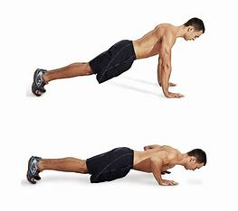
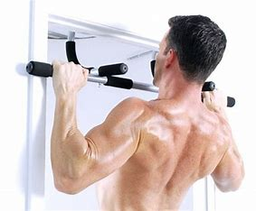
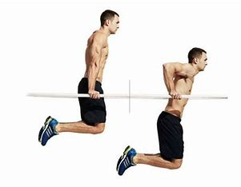
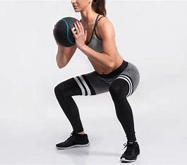
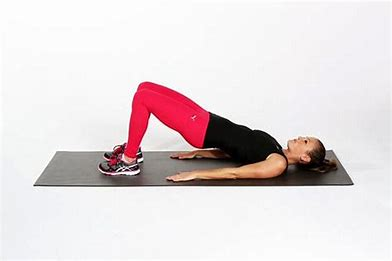
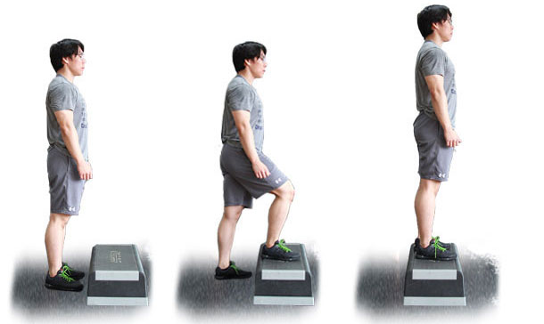
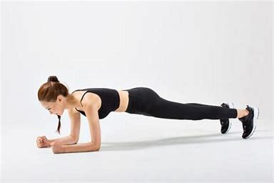
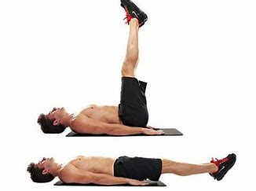
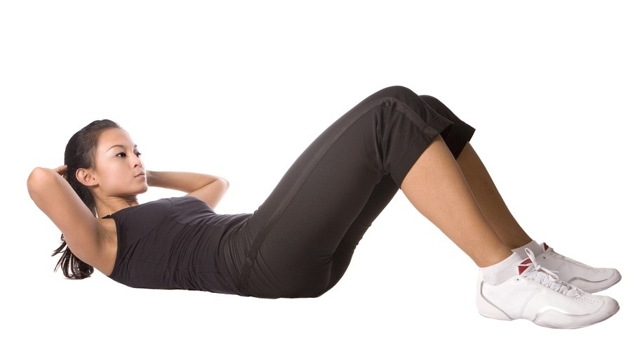

상체 운동 모음

푸쉬업
등과 몸통, 팔뚝 등 상체 근육에 자극이 많이 갑니다. 덕분에 쇄골 라인과 팔뚝, 옆구리, 복근 등을 아름답게 가꿔줍니다.

풀업
주로 사용하는 근육은 상완이두근, 광배근, 대원근 등을 사용하지만 서브 근육으로 삼각근, 대흉근, 코어도 함께 사용해 상체의 대부분의 근육을 사용합니다. 그래서 등 근육을 발달시키면서 상체의 밸런스도 함께 향상시켜줍니다.

딥스
대흉근을 발달시키는 운동으로 삼두와 어깨 또한 발달됩니다.
하체 운동 모음

스쿼트
하체 근력 강화와 코어 근력 향상과 자세교정에 탁월한 효과를 보실수있습니다.

브릿지
둔근을 강하게 하면 스포츠에 필요한 빠르게 달리거나 높이 뛰어오르는 능력이 향상됩니다.

스텝업
하체 근력 강화 및 힙업 효과가 있습니다.
복부 운동 모음

플랭크
체지방 감소효과와 코어 근육을 강화 할수있습니다.

레그레이즈
복부, 상체 및 코어를 단련 시키는데 도움이 됩니다.

크런치
호흡 기능 개선 및 체중 유지 효과가 있습니다.